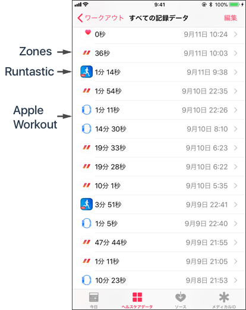

同じワークアウトが複数表示される場合、Apple ヘルスケアで元データを確認してください。
重複しているワークアウトがある場合、それらのソースを確認します。
左のアイコンはソース（アプリ）のアイコンが表示されています。

違うソースで重複していた場合、必要ないワークアウトのソースのアプリの設定を見直してください。
例えば、Zonesで測定したワークアウトを別アプリに取り込みした場合、そのアプリから同じワークアウトを再度ヘルスケアに登録してしまう場合があります。
その場合は、そのアプリで、ヘルスケアに登録しないように設定をしてください。
ワークアウトの削除は、登録したアプリ もしくは Appleのヘルスアプリにて行ってください。
Zonesは、Zonesで登録したワークアウトのみ削除が可能です。
Zones以外のアプリで登録したワークアウトは、登録したそのアプリ もしくは Appleのヘルスケアアプリで削除してください。
サードパーティのアプリは、その他のアプリで登録したワークアウトを削除することはできません。
これは、watchOSの制限になります。
Zonesの「最近」、「スタッツ」の表示は、ヘルスケアに登録されている全てのワークアウトが表示され、特定のソースを除くことはできません。
「インサイト」では、ソースをフィルタ条件にしてワークアウトを抽出することができます。(PROが必要です)
Apple ヘルスケアにて重複しているワークアウトが無かった場合は、暫く時間を置いてから、再度Zonesにて確認してください。
Apple ヘルスケアの同期処理中は稀にこの現象が発生する現象が報告されています。